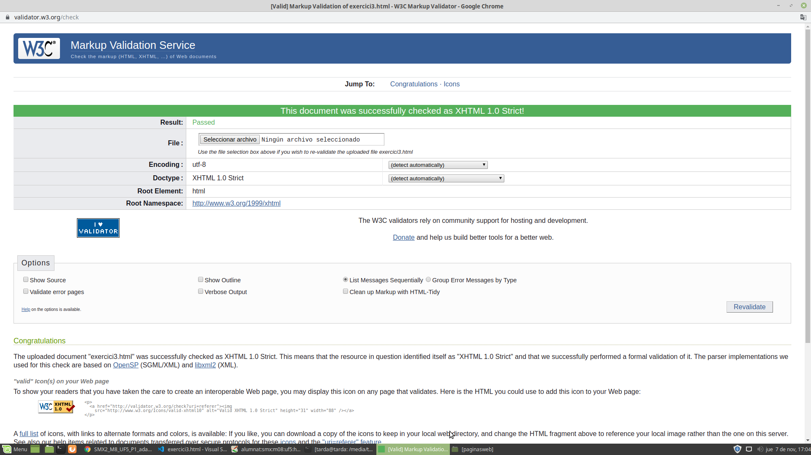

Nombre Diametro relativo Periodo orbital Numero de lunas
-----------------------------------------------------------------
Mercurio 0,382 0,24 años 0
Venus 0,949 0,62 años 0
Tierra 1 1 año 1
Marte 0,532 1,88 años 2
Jupiter 11,209 11,86 años 49
Saturno 9,449 29,46 años 52
Urano 4,007 84,01 años 27
Nepturno 3,883 164,80 años 13
